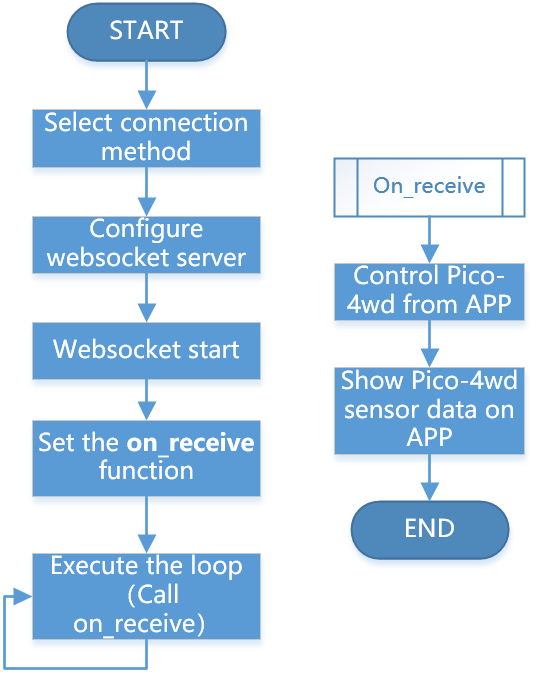

How app_test.py Works?¶
The communication between Pico-4wd and Sunfounder Controller is based on the websocket protocol.
Its function has been written in ws.py, we have loaded it in the chapter Upload the Libraries to Pico.
The specific workflow of APP Control gameplay is as follows:

Code
from ws import WS_Server
import json
import time
import pico_4wd as car
NAME = 'my_4wd_car'
## Client Mode
# WIFI_MODE = "sta"
# SSID = "YOUR SSID HERE"
# PASSWORD = "YOUR PASSWORD HERE"
## AP Mode
WIFI_MODE = "ap"
SSID = ""
PASSWORD = "12345678"
ws = WS_Server(name=NAME, mode=WIFI_MODE, ssid=SSID, password=PASSWORD)
ws.start()
def on_receive(data):
# write control codes here.
pass
# write sensor codes here.
pass
ws.on_receive = on_receive
def main():
print("start")
while True:
ws.loop()
try:
main()
finally:
car.move("stop")
car.set_light_off()
This code constitutes the basic framework of APP control. Here, you need to pay attention to the following two parts:
Setup websocket
There are two connection mode between Sunfounder Controller and Pico-4wd car: One is AP mode, the other is STA mode.
AP Mode: You need to connect Sunfounder Contorller to the hotspot released by Pico-4wd car.
STA Mode: You need to connect Sunfounder Controller and Pico-4wd car to the same LAN.
The default connection mode is AP Mode: The car releases the hotspot (the Wifi name is
NAMEin the code, here ismy_4wd_car), the mobile phone (tablet) is connected to this WLAN. This mode allows you to remotely control Pico-4wd in any situation, but will make your phone (tablet) temporarily unable to connect to the Internet.NAME = 'my_4wd_car' ## Client Mode # WIFI_MODE = "sta" # SSID = "YOUR SSID HERE" # PASSWORD = "YOUR PASSWORD HERE" ## AP Mode WIFI_MODE = "ap" SSID = "" PASSWORD = "12345678" ws = WS_Server(name=NAME, mode=WIFI_MODE, ssid=SSID, password=PASSWORD) ws.start()
You can also use STA mode: Let Pico-4wd car connects to your home WLAN, and your mobile phone (tablet) should also be connected to the same WLAN.
This mode is opposite to the AP mode and will not affect the normal use of the mobile phone (tablet), but will limit your Pico-4wd car from leaving the WLAN radiation range.
The way to start this mode is to comment out the three lines under
## AP Mode, uncomment the three lines under## Client Mode, and change the SSID and PASSWORD to your home WIFI at the same time.NAME = 'my_4wd_car' ## Client Mode WIFI_MODE = "sta" SSID = "Sunfounder" PASSWORD = "12345678" ## AP Mode # WIFI_MODE = "ap" # SSID = "" # PASSWORD = "12345678" ws = WS_Server(name=NAME, mode=WIFI_MODE, ssid=SSID, password=PASSWORD) ws.start()
After completing the connection mode settings, Websocket will set up and start the server.
ws = WS_Server(name=NAME, mode=WIFI_MODE, ssid=SSID, password=PASSWORD) ws.start()
Responding
The specific operation code of Pico-4wd and Sunfounder Controller is written on the
on_receive()function. Usually, we need to write the codes for APP to control Pico-4wd on the front and the codes for APP to show Pico-4wd sensor data on the back.def on_receive(data): # write control codes here. pass # write sensor codes here. pass ws.on_receive = on_receive
As shown below, we have written the controls code for the H area slider to control the number of lights on the RGB Board; and the sensor codes for the D area to show the radar detection results.
def on_receive(data): # write control codes here. num = int(data['H_region']*9/100) for i in range(0,num): car.write_light_color_at(i, [80, 50, 0]) for i in range(num,8): car.write_light_color_at(i, [0, 0, 0]) car.light_excute() # write sensor codes here. data = car.get_radar_distance() print(data) ws.send_dict['D_region'] = data ws.on_receive = on_receive
Finally,
on_receive()will be assigned tows.on_receiveand then called byws.loop.